Essential
Thirty minutes at one location. You get at least 15 edited, high resolution photos in a private online gallery.
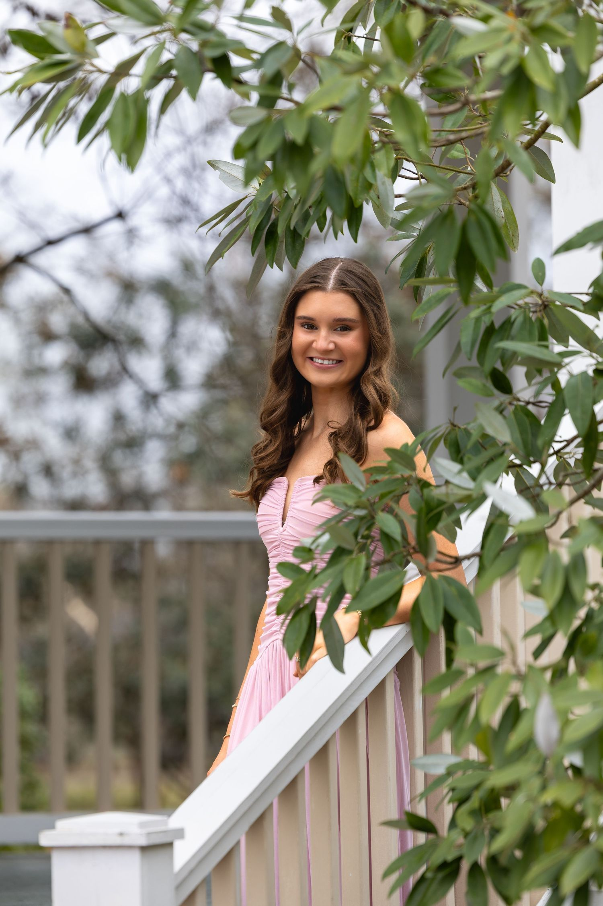
I'm a senior photographer and videographer based in Oxford and Madison. I cover Ole Miss and the Jackson metro, including Ridgeland, Flowood and Brandon.
These are from senior sessions on campus at Ole Miss and a group session with friends and family. I'll tell you where to stand, so you don't need to know how to pose.
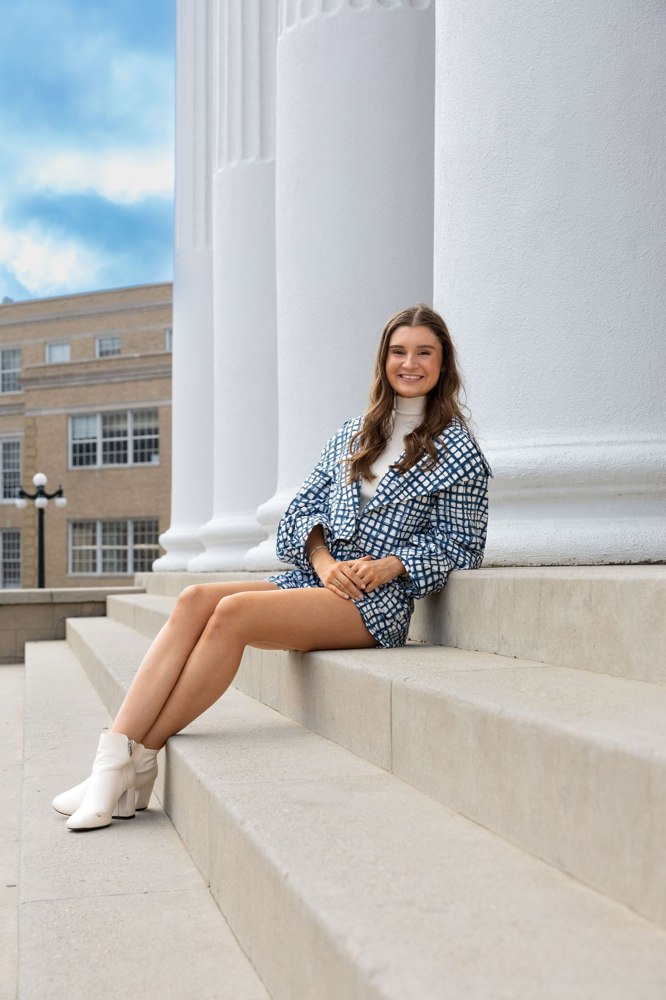
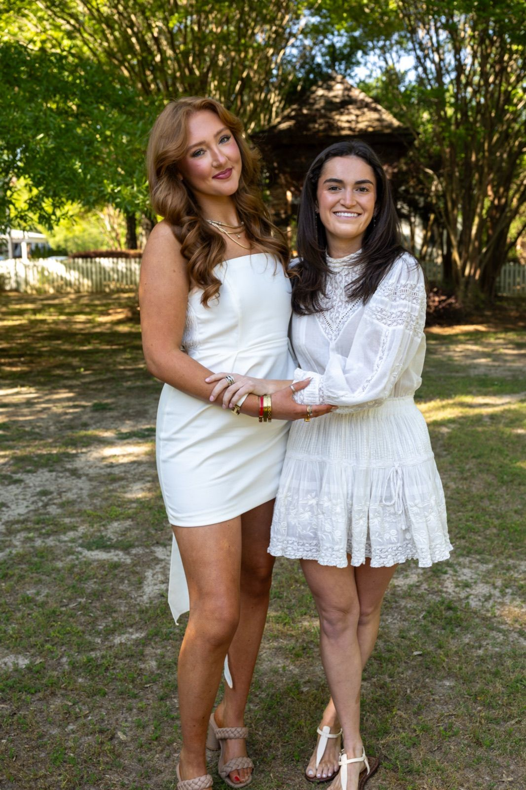
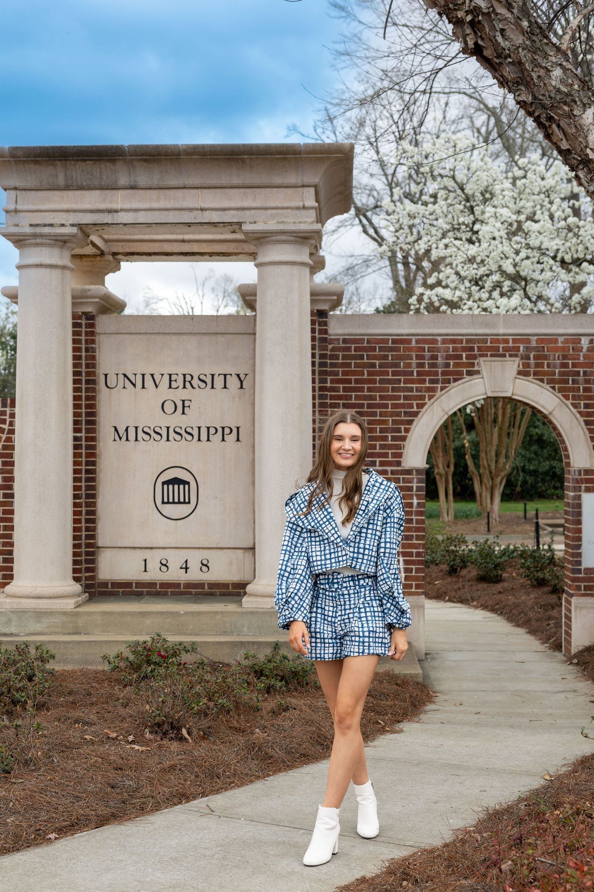
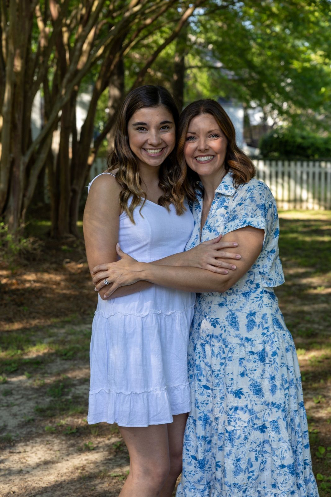
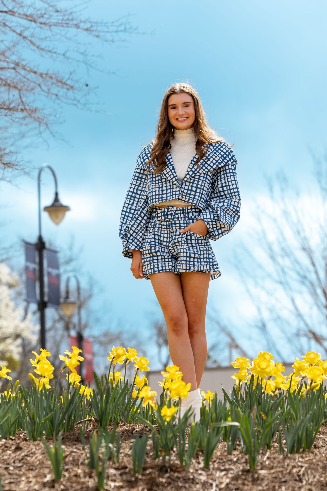
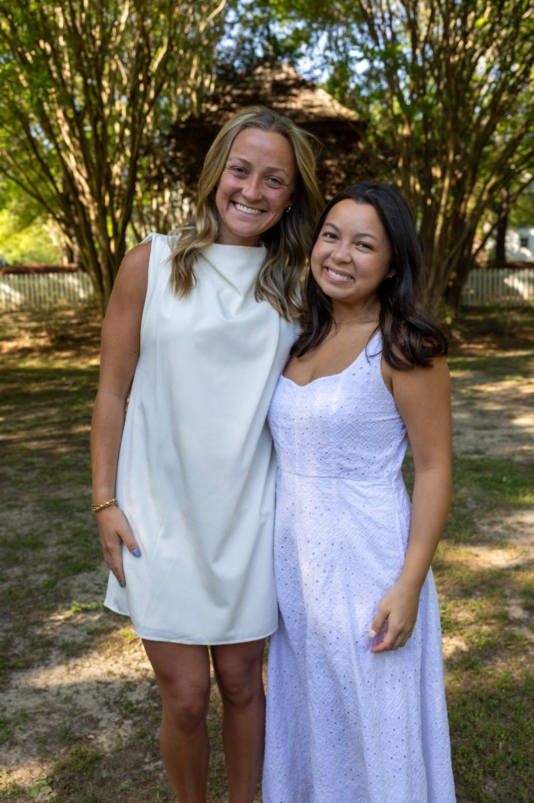
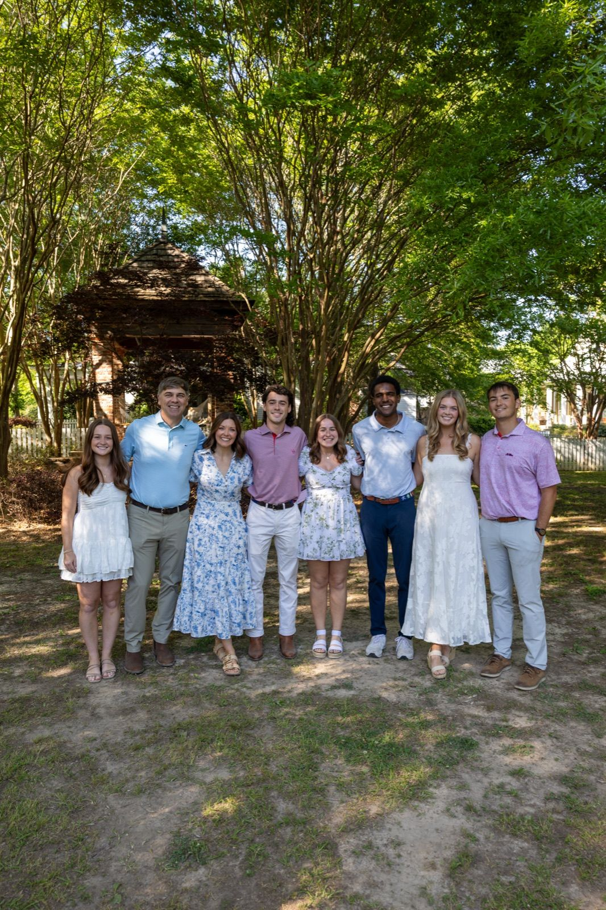
Thirty minutes at one location. You get at least 15 edited, high resolution photos in a private online gallery.
A full hour at up to two locations with one outfit change. At least 30 edited photos, sized for printing and for posting.
Two hours across several locations with two outfit changes and 40 or more edited photos. This is the one to book if friends are joining you.
These are team hype films I made for Jackson Prep and Jackson Academy football, plus a preseason film for the Jackson Academy Encore show choir. The options below work for one senior athlete, a team or a school program. For a reel about just your senior, Highlight is cut from game film you already have.
Jackson Prep 2025 hype film: football, cheer and dance
Jackson Academy football, hype film
Jackson Prep 2024 hype film: football and cheer
Jackson Academy Encore show choir, preseason hype film
Send me the game film you already have, from Hudl, a broadcast or your phone. I cut it into a 1 to 2 minute recruiting reel with name and number titles and licensed music, in widescreen and vertical, with one round of changes.
I film one game or senior night from the sideline in 4K: warmups, big plays and the crowd. You get a color graded 60 to 90 second hype reel within one week.
Two hours at practice or a game plus a three hour media day, with drone shots where they're allowed. The result is one 1 to 2 minute hype film in 4K with two rounds of changes. Extra shoots are billed separately.
Cap and gown photos around campus, at spots like the Grove, the Walk of Champions and the university seal. Ask me about a graduation session and we'll plan the stops together.
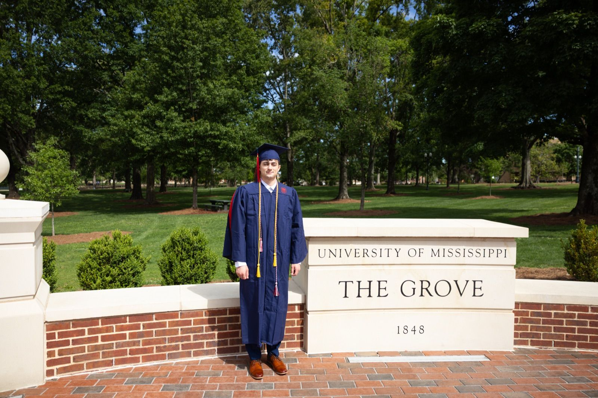
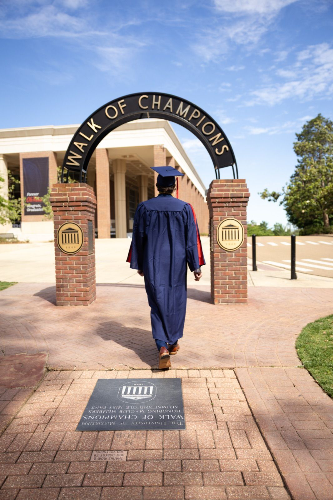
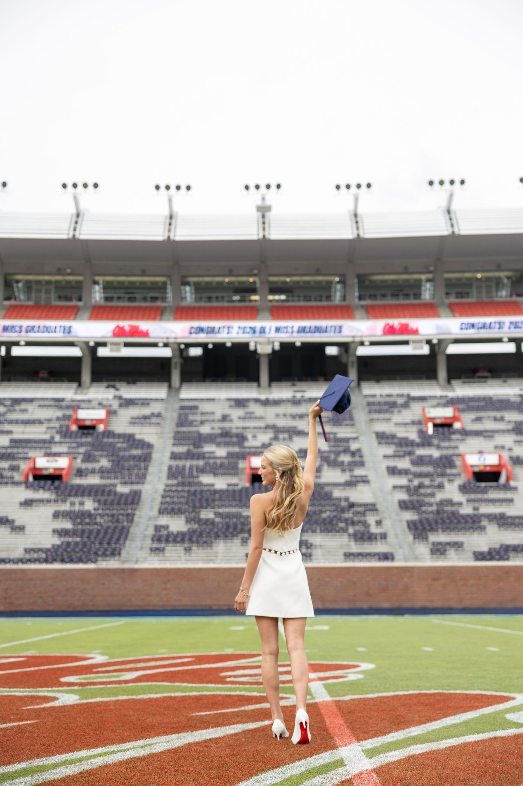
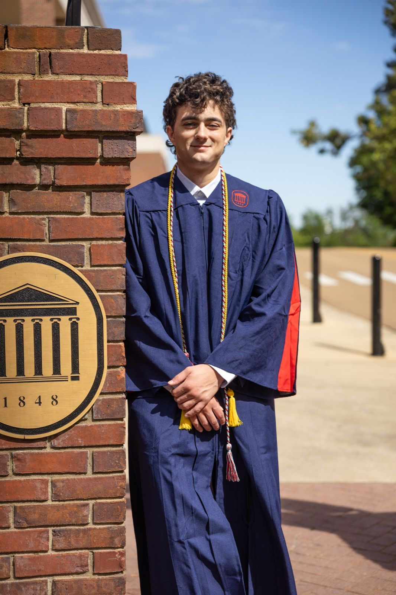
I shoot both, so if you want senior pictures and a hype film, you only have to book one person. When you reach out, I reply personally, usually within a day.
I also work in live broadcasting for the SEC Network as a technical director and replay operator, where there's no second take. I'm an FAA Part 107 certified drone pilot, and I've been making photos and films since 2019. More about me.
There are three sessions: Essential, Signature and Premium. Current prices are on my pricing page, or send me your date for a quote.
Yes, on Signature and Premium. Signature includes one outfit change and Premium includes two. Essential is one look at one spot.
Yes. Premium is the session I suggest for groups, since it runs two hours across more than one location.
Yes. That's what the Highlight reel is for. Send me your Hudl film and I'll cut it down to 1 to 2 minutes.
Within one week of filming.
Tell me what you have in mind: photos, a hype film or both. You can also email samuel@samuellongproductions.com.
Start your inquiry